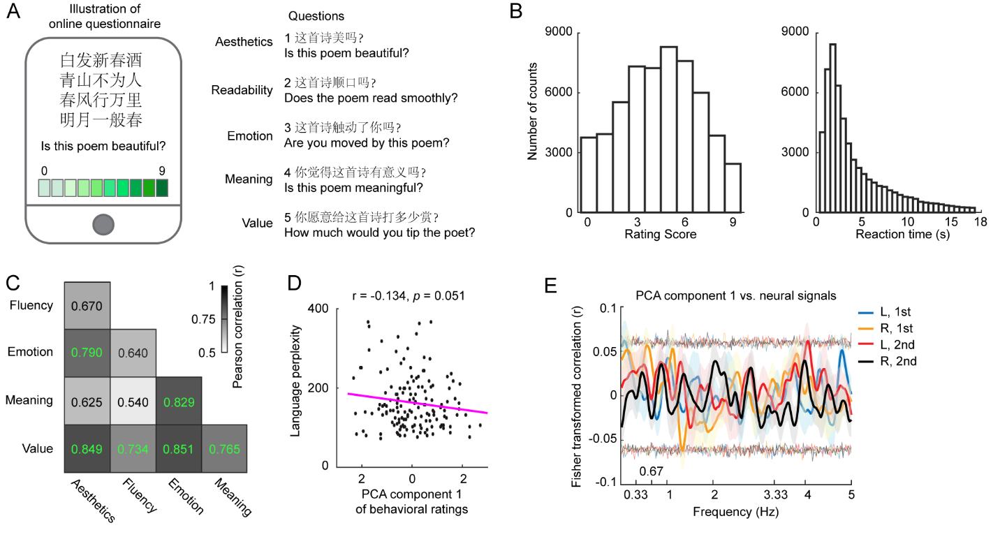

Results of behavioral rating and speech segmentation
We collected behavioral ratings on the artificial poems through online crowdsourcing evaluation. This crowdsourcing method sampled a wide range of population and acquired a large amount of data. The evaluation data was used to evaluate the linguistic and aesthetic quality of the artificial poems, as well as to find neural correlates of the linguistic and aesthetic aspects of the artificial poems.
The same 150 artificial poems as in the MEG experiment were used in the online evaluation. We designed five questions to probe five aspects of poem appreciation, which can be answered online within a reasonable amount of time: 1) aesthetics: ‘is this poem beautiful?’; 2) fluency: ‘does the poem read fluently?’; 3) emotion: ‘are you moved by this poem?’; 4) meaning: ‘is this poem meaningful?’; 5) value: ‘how much would you tip the poet?’. We customized an online test that can be run on smartphones and computers. Each of the five questions was presented on a page below the entire poem. At the bottom, a discrete rating scale from 0 to 9 was shown with 0 being the most negative and 9 being the most positive scores. Participants can read the poems and answer the questions at a self-paced speed, but they were asked to provide answers as fast as possible. After all the five questions of one poem were answered, the next poem was shown. Each time participant can evaluate 5 poems at a time but can open the online test multiple times to evaluate more. The orders of poems and questions were randomized. We distributed our online tests through two popular Chinese social medias, WeChat Moments and Sina Weibo, which are analogous to Twitter and Facebook.
Analysis of behavioral rating from online evaluation
We recorded the reaction time for answering each question. The reaction time data were used to test the validity of the data (assessing the RT distribution) as well as to eliminate the outlier responses – the responses with reaction time falling in the top and bottom 5 percentage (< 414 ms and > 17292 ms) were removed. In addition, if a participant’s rating scores remained unchanged across all the five questions for one poem, the ratings of this poem were removed. We collected a total of 55982 evaluations for the five questions on the 150 artificial poems. For each question, each poem received the number of evaluations ranging from 52 to 109. We averaged over all the evaluations on each question for each poem and used the averaged ratings in the further analyses.
We correlated the amplitude spectra from 0.05 Hz to 5 Hz of the neural signals with the language perplexity and the first component of principle component analysis (PCA) on the behavioral ratings, as the behavioral ratings across all the five questions were highly correlated. The first PCA component explained 79 percent of variance.
For the correlation between the behavioral rating and the neural signals, we removed the real poems, because the real poems were not rated in the online evaluation. At each frequency point, we correlated the power values of the trials from the artificial poems with their corresponding poem ratings using Pearson correlation. We applied the Fisher-z transformation on the correlation coefficients of each participant and averaged the transferred coefficients over all the participants. To determine the significance of correlations, we conducted a permutation test. We randomly shuffled the correspondence between the trials and the poem stimuli and derived a correlation coefficient from the shuffled dataset for each participant. We repeated the group-averaging procedure and derived a new group-averaged coefficient. This procedure was repeated 1000 times and we sorted the results at each frequency point to derive a threshold of a two-sided alpha level of 0.01 (the thin lines in the figure), as four conditions were tested.

Online rating and correlation between the behavioral rating and speech segmentation. (A) Illustration of online evaluation. The interface of the online survey is shown in the left panel. The five questions regarding five aspects of poem appreciation are shown on the right. The English translations of the questions are only for illustration purpose and were not shown in the survey. (B) Histograms of rating scores and reaction time. The left panel shows the histogram of rating scores of the online survey across the five questions and 150 artificial poems. The right panel shows the histogram of reaction time of participants’ responses. (C) Correlations of behavioral ratings between the five questions. The gray scale codes the value of correlation coefficients and the green numbers indicate significant correlations above the threshold derived from a permutation test (the threshold of the two-sided alpha level of 0.05). (D) Correlation between the language perplexity and the first PCA component of the behavioral ratings. (E) Behavioral rating-neural correlation on the channels selected from both ~0.24 Hz and ~0.64 Hz. We next aimed to find correlations between the behavioral ratings and the neural signals so that we could potentially identify neural components that were modulated by the behavioral ratings of the poems. The procedure here was the same as in Figure 4. However, we did not find any frequency ranges showing significant correlations using the channels either selected at ~0.24 Hz or at ~0.64 Hz. We showed the plot here from the channels selected from both ~0.24 Hz and ~0.64 Hz. The line color codes hemisphere and presentation. The transparent thin lines (same color code) represent the upper and lower thresholds indicating the significance level from the cluster-based permutation test (two-sided alpha level of 0.01). The shaded areas in all the plots represent one standard error of the mean.